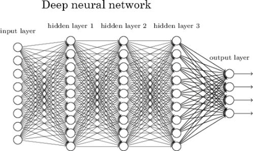
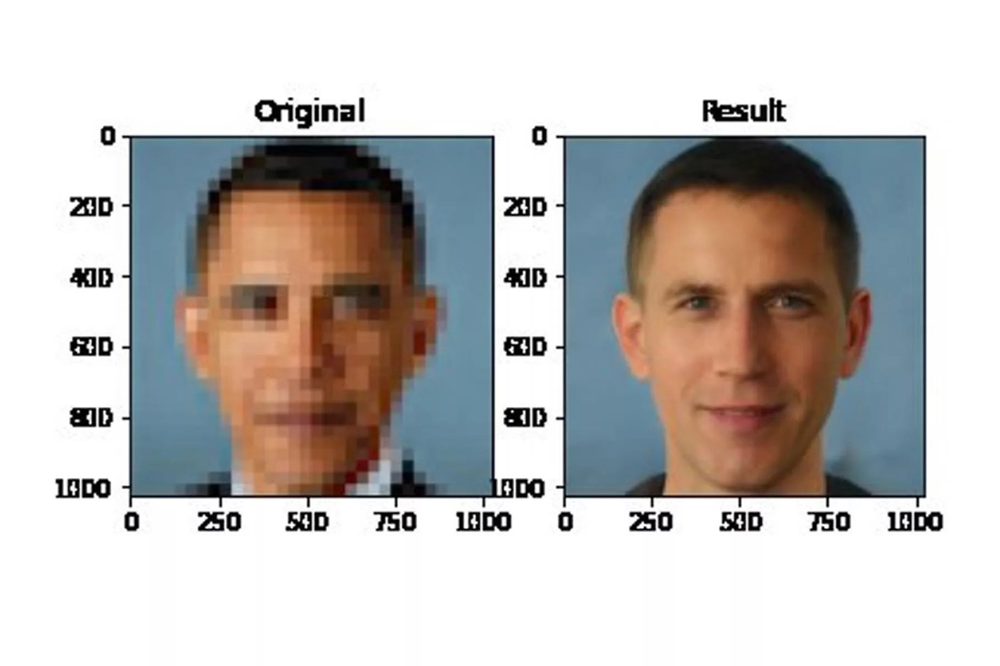

Data Science has been called the sexiest job of the century, which when you find out that it’s really just statistics and computers, may be hard to believe. But the people with experience in using the critical-thinking skills involved in approaching a problem, collecting data, and using sophisticated tools to draw out the story underneath that data are among the highest paid and most sought after in the business world.

Data Scientists use programming tools like R and Python combined with statistical tools like regression trees, machine learning, and even Artificial Intelligence to tackle problems and questions like “where is the best city for a new refugee to find a job and live comfortably?” to “what show will a given Netflix user want to watch next?”
Data science is a field that’s growing faster than ever and having an increasingly important role in the relationship between people and technology. This is why professionals need to take great care to be sure that ethical lines are being drawn and that data is utilized to improve the people living in the world rather than exploit and marginalize them. For example, Deep Fakes and improved Text Generation algorithms are making it easier than ever to distribute fake news. Twitter users are finding that the image focus algorithm acts in a problematic way. This image recreation technology published in 2020 highlighted how easy it is to build harmful biases into AI, accidentally transforming a photo of Barack Obama into that of a white man.
